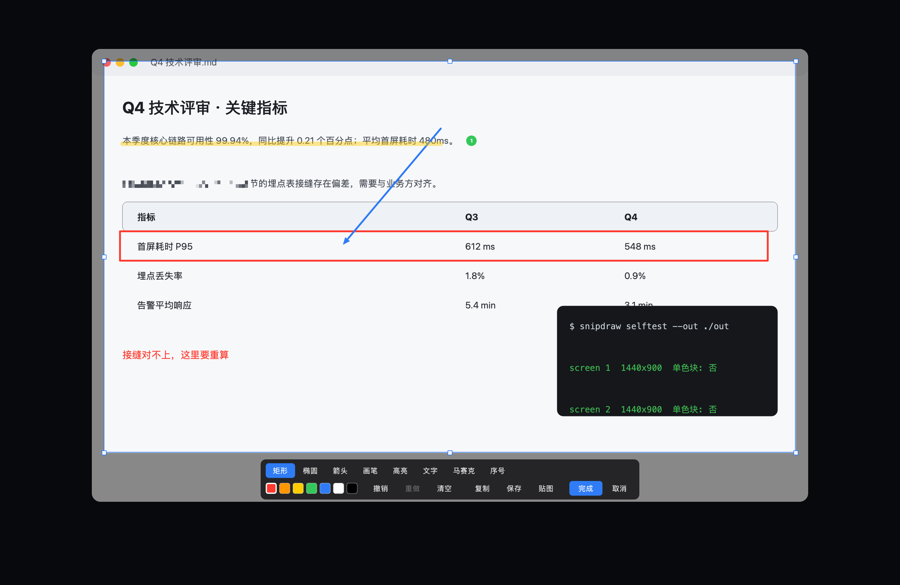
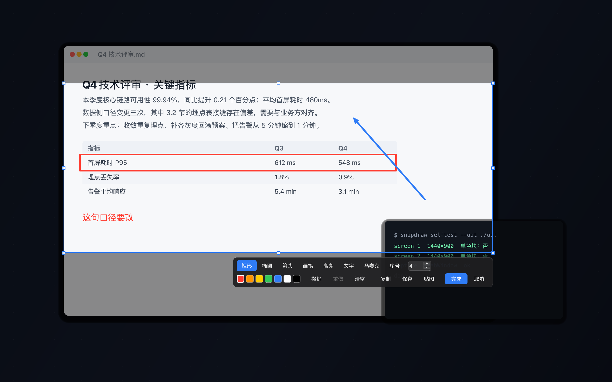
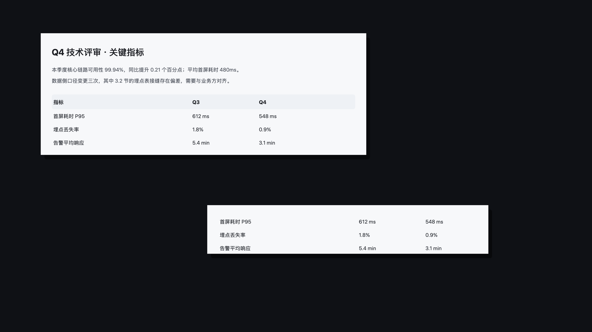
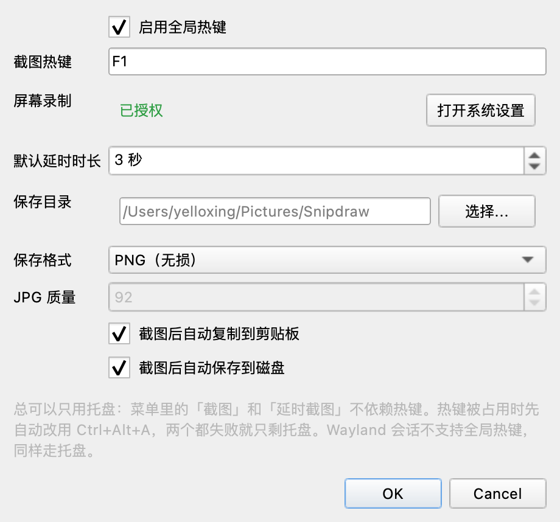

沿用 Snipaste 那套肌肉记忆：F1 起手框选，选区里八种标注随手画，Enter 完成即复制进剪贴板、顺手存盘； 截下来的图还能直接贴回屏幕当参考，滚轮缩放、Ctrl 滚轮调透明度。

不做编辑器、不做图床、不做云同步。只把「截一块屏、说清楚哪里有问题、发给别人」这条路径做到最短。
全局热键默认 F1，可在设置里改。多显示器会铺成一张连续的画布，可以跨屏框选；拖动时带放大镜，精确到像素。
F1矩形、椭圆、箭头、画笔、高亮、文字、马赛克、序号，各有快捷键；画完还能选中、拖手柄改尺寸，Ctrl+Z 随时反悔。
R E A P H T M N打码不是把像素烘焙进底图：每次绘制都从原图重新取样，所以糊完还能挪位置、改大小、撤销，底图始终是原始的。
截完直接贴回屏幕当参考：左键拖动、滚轮以光标为锚点 0.2–4× 缩放、Ctrl/⌘+滚轮调透明度，双击或 Esc 关掉。
最多 20 张热键按下后倒计时再抓屏，默认 3 秒、可自定义。要拍的菜单、悬停展开的下拉、右键菜单，都能在展开之后再进画面。
后台只留一个菜单栏图标，点开就是「截图 / 设置 / 退出」。截图完成自动进剪贴板并写入保存目录，不必再走一遍另存为。
下面这些图是直接渲染应用真实组件截出来的，不是示意图：工具栏、图元、手柄、贴图行为就是你会看到的那些。
框选完成随即进入标注态：选区外压暗、四边八点可拖拽改尺寸，工具栏贴在选区下方。所有图元只在选区内绘制并被裁切，导出的图不会溢出边框。

矩形和箭头使用默认 3 像素线宽，文字跟随当前颜色。线宽按物理像素绘制，换到 Retina 屏上不会变细。矩形圆角、箭头端点统一收圆，是自绘的而不是系统控件拼出来的。

截图点「贴图」，图片按原始选区的尺寸和位置贴回屏幕，参与你的工作流而不打断它。滚轮以光标为锚点缩放，拖动改位置，透明度调低可以当描摹底图。

热键、延迟秒数、保存目录、PNG/JPG 与质量、是否自动复制到剪贴板、是否自动存盘，都在一个窗口里。Wayland 下会明确写「不支持全局热键，只能从托盘触发」，而不是静默失效。
python -m snipdraw settings（已运行时会转发给托盘实例）差异只落在「热键注册」与「窗口层级」两处，业务逻辑不按平台分叉。
用 NSFloating 层级并把窗口抬到菜单栏与 Dock 之上，overlay 不会被系统压住；打包成 .app，无 Dock 图标、只留菜单栏常驻。
热键走 RegisterHotKey，打包走 EXE 并带 .ico 图标；spec 与构建脚本按平台分支，在 Windows 上跑 packaging/build.py 出三样东西：目录（98.6 MB）、zip（38.5 MB）和 Inno Setup 安装包（26.9 MB，装到当前用户目录，免管理员）。
X11 是承诺平台：全局热键走 XGrabKey，platforms 插件保留 xcb。Wayland 标为实验性——拿不到全局热键，只能从托盘触发。
Qt 6 提供三平台一致的绘制与窗口能力，Python 只负责写「画什么」，重活都在 Qt 的 C++ 里；打包时只保留真正用到的框架与插件。
macOS 下载 .dmg（20.4 MB）：双击挂载，把 Snipdraw 拖进 Applications 就装好了；Windows 有两种装法——setup.exe（26.9 MB，双击装到当前用户目录，免管理员，带开始菜单快捷方式）或 .zip（38.5 MB）解压即用；Linux 产物需在 Linux 上用 packaging/build.py 自行构建。